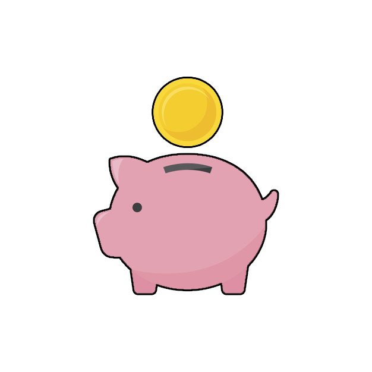
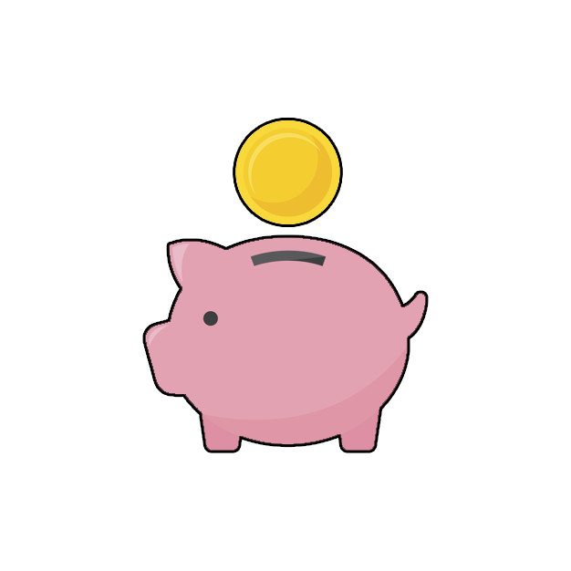

Juego de las monedas
Jugar
Juego del tiburón
Jugar
Juego de las monedas
Jugar
Juego del tiburón
Jugar
- Práctica creada por Emilio José Pérez Mariscal y Jesús Cuadra Tellez. Ingeniería Multimedia
- Tutorial de animación que mueve una mano mostrando al jugador como debe jugar
- Ajuste de tiempos para que el jugador pueda ver lo que ocurre antes de jugar
- Testeado en niños pequeños, adultos que nunca han usado un ordenador y otros sujetos de manera exitosa
- Los test nos han ayudado a mejorar los elementos del juego para proporcionar una experiencia de usuario mas usable
- Incluye audio explicativo inicial de como jugar